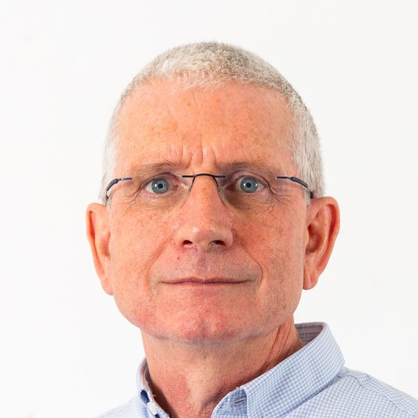
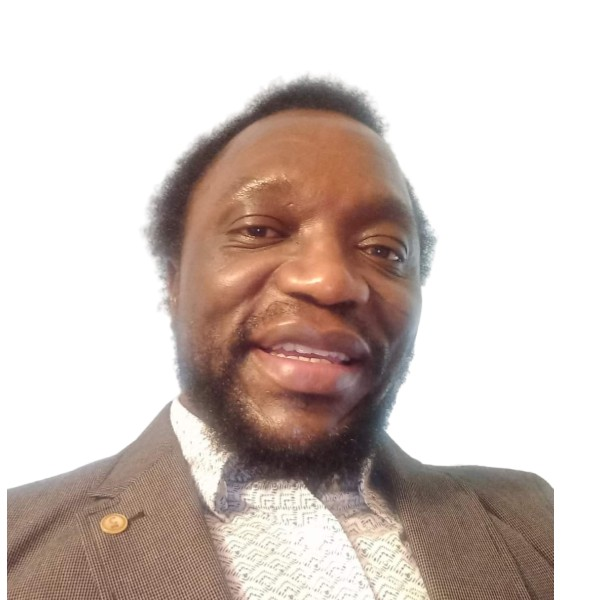
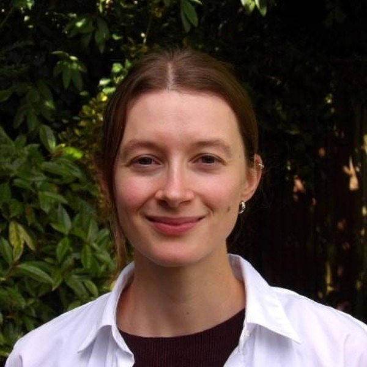
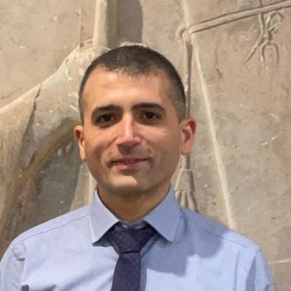
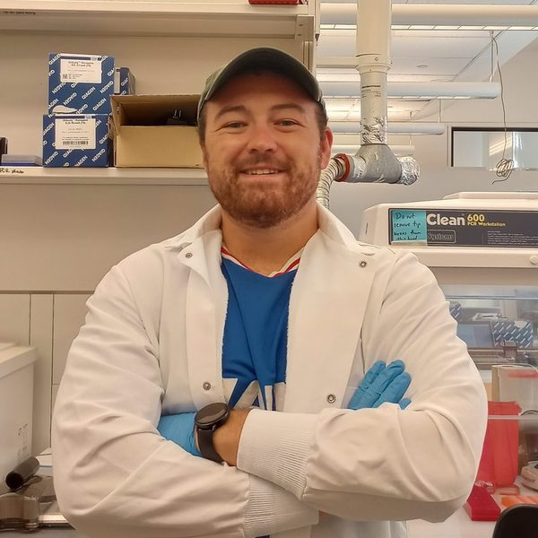
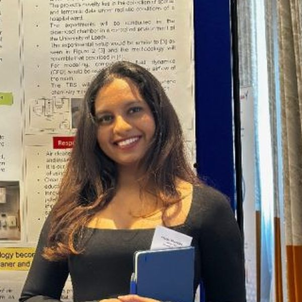
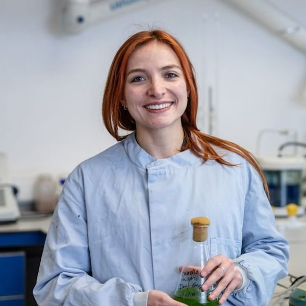

How our themes collaborate
Who actually writes with whom. Each line is co-authorship between two of our four research themes, counted from our research outputs for 2018 to 2025 and including our doctoral researchers, who are placed with their supervisor. The thin connections matter as much as the thick ones: they are where a cross-theme collaboration is only just beginning.

Dr Marco-Felipe King
Combines quantitative microbial risk assessment (QMRA) with computational fluid dynamics and experiments in the UK's largest controlled aerobiology chamber to model pathogen transmission across air, hands, and surfaces.
Indoor Air ThemeDr Amirul Khan
Leads computational fluid dynamics research across building ventilation, urban air quality, and multiphase environmental flows, developing reduced-order models and physics-informed machine learning surrogates for real-time flow prediction.
Methods & Capabilities
Prof. Catherine Noakes OBE
Internationally recognised leader in airborne infection transmission, building ventilation, and air cleaning technologies. Recipient of the 2026 Pettenkofer Award (Indoor Air 2026), Fellow of the Royal Academy of Engineering, and former Chair of the SAGE Environment and Modelling Group.
Read Impact Story
Prof. Barbara Evans
Fellow of the Royal Academy of Engineering and global leader in urban sanitation, faecal sludge management, and public health engineering. Co-developer of the Shit Flow Diagram (SFD) and lead on climate-resilient sanitation and safely managed services across Africa and South Asia.
Read Impact Story
Prof. Martin Tillotson
Researches water and wastewater treatment, microplastics removal in drinking water, sludge processing, resource recovery, and water utility regulation. Co-Director of the EPSRC WaterWISER CDT.
Water Theme
Prof. Doug Stewart
Investigates microbial processes in stabilising metal-contaminated industrial soils, revegetation to rehabilitate industrial waste sites, secondary organic materials for soil restoration, and trace metal transformations in agricultural soils and alkaline wastes.
Water Theme
Prof. Mark Trigg
Researches flood risk, global water hazards, river-floodplain hydrodynamics, and hydrological modelling, leading major studies on the Congo River basin, natural flood management, and urban flood resilience.
Water Theme
Prof. Simon Rees
Specialises in building physics, geothermal heating and cooling, ground-source heat pumps, thermal energy storage, and dynamic simulation of low-energy building ventilation systems.
Indoor Air Theme
Dr Miller Alonso Camargo-Valero
Leads research on nature-based wastewater treatment, microalgae and duckweed biorefineries, sanitation greenhouse gas emissions, and circular bioresource systems across the UK, Latin America, and Sub-Saharan Africa.
BioResources ThemeDr Anne Velenturf
Leads the Yorkshire Circular Lab and works on whole-system resource flows, regulatory frameworks, and sustainable circular economy transitions across offshore wind infrastructure (EoLO-HUBs, RESCUE) and the foundation industries.
BioResources Theme
Dr Mohsen Besharat
Investigates transient hydraulic flows, air-water two-phase interactions in pressurised pipelines, surge protection, and compressed-air and pumped-hydro energy storage using physical experiments and CFD.
Water ThemeDr Duncan Borman
Applies multiphase computational fluid dynamics and physical modelling to hydraulic infrastructure, reservoir and treatment tank hydrodynamics, and environmental fluid flows.
Water ThemeDr Xiaohui Chen
Develops coupled thermo-hydro-mechanical-chemical (THMC) poromechanics models and physics-informed machine learning methods for multiphase subsurface flow, catchment hydrology, and geotechnical resilience (EU Horizon GRID, BioGeoInterface).
Water Theme
Dr Akintunde Babatunde
Researches constructed wetlands, nature-based water and wastewater treatment processes, phosphorus and nutrient recovery, drinking water distribution nitrification, and systems engineering for urban water management.
Water Theme
Dr Paul Hutchings
Examines the institutional, financial, and political economy dimensions of rural and urban water and sanitation service delivery, healthcare resilience to extreme weather, and climate-resilient WASH governance.
Sanitation Theme
Dr Sally Shahzad
Researches thermal comfort, personal comfort systems, fuel poverty and overheating impacts on vulnerable populations (UKRI JUSTHEAT), and low-energy ventilation in buildings.
Indoor Air Theme
Dr Cynthia Okoro-Shekwaga
Specialises in anaerobic digestion, biomethane enhancement, and agricultural digestate valorisation. Principal Investigator of the £1.75M Ayrton Challenge Energy (Innovate UK) BioCool project for off-grid biogas-powered milk cooling in East Africa.
View ProfileDr Louise Fletcher
Environmental microbiologist leading aerobiology chamber studies, bioaerosol sampling, germicidal UV-C disinfection trials, and bioaerosol emissions abatement at waste and bioprocessing facilities.
Research FacilitiesDr Douglas Booker
Principal Investigator of EPSRC HESTIA, combining low-cost air quality sensor networks with critical social science to investigate indoor air pollution inequalities and environmental justice in homes and schools.
Indoor Air Theme
Dr Mark Tarn
Develops lab-on-a-chip microfluidic platforms for droplet-freezing assays, atmospheric ice-nucleating particle analysis, and real-time single-particle bioaerosol detection across polar, marine, and indoor environments.
Indoor Air ThemeDr Maryam Asachi
Researches chemical and environmental process engineering, multiphase particle and powder technology, sustainable drainage systems (SuDS), and water and wastewater treatment processes.
Water ThemeDr Shashank Bettadapura Subramanyam
Researches coupled thermo-hydro-mechanical processes in unsaturated soils, geological carbon sequestration, biogeotechnics, and soil-environment interactions.
BioResources Theme
Prof. Paul Eke
Water engineer specialising in hydrocarbon removal with constructed wetlands and applying artificial neural networks and digital twins to optimise sustainable drainage and urban infrastructure systems.
Water Theme
Dr Subarna Sivashanmugam
Investigates Building Information Modelling (BIM), construction waste minimisation, and life cycle assessment (LCA) of low-carbon concrete and cement, including EPSRC IAA research on reinforced concrete slabs and UKRI work measuring the embodied carbon of BCSA cement.
University Staff ProfileDr Franja Prosenc
Investigates microalgae-based wastewater treatment, removal of bisphenols and contaminants of emerging concern, and circular nutrient and protein recovery.
BioResources Theme
Dr Claire Grisaffi
Investigates the regulation, formalisation, and professionalisation of non-sewered sanitation, faecal sludge emptying, and urban water and sanitation services in low- and middle-income cities.
Sanitation Theme
Dr Ruth Sylvester
Researches water poverty, equity and inclusion in the global sanitation sector, and the governance and institutional systems required to sustain safely managed WASH services.
Sanitation Theme
Dr Waseem Hiwar
Conducts experimental research in the controlled walk-in aerobiology chamber on airborne pathogen survival, automated passive air sampling, fomite transfer, and hospital air cleaning interventions.
Research Facilities
Dr Zhe Zhan
Researches the climate resilience of on-site sanitation systems, combining field sampling in India and Uganda with multiphase CFD modelling to quantify how floodwater interacts with pit latrines and septic tanks.
Read Research Post
Prof. Jamie Bartram
Former coordinator of Water, Sanitation, Hygiene and Health at the World Health Organization; internationally recognised leader in global drinking-water safety plans, SDG 6 policy, and environmental health.
Sanitation Theme
Prof. Andy Sleigh
Specialist in computational hydraulics, open-channel flows, and quantitative microbial risk assessment; co-developer of the Shit Flow Diagram (SFD) graphic generator and methodology.
Read Impact Story
Dr David Elliott
Oversees the Public Health and Environmental Engineering Laboratories, analytical instrumentation, microbiological safety, and experimental support across all WPE research themes.
Research Facilities
Johan Pasos-Panqueva
Researches sustainable aquaculture nutrient recycling and protein recovery using duckweed biorefinery systems, supervised by Dr Miller Alonso Camargo-Valero.
BioResources Theme
Jack Dalton
Investigates the effects of ventilation systems and air distribution on airborne pathogen transmission in healthcare settings.
Indoor Air ThemeGettie Shiinda
Researches microbial communities and pathogen inactivation in anaerobic digestion and sanitation treatment systems.
Sanitation Theme
Anushi Khandare
Optimises the performance of air-cleaning technologies for mitigating airborne and surface infection transmission in hospital environments using chamber experiments and CFD.
Indoor Air ThemeXiaoxuan Qin
Models respiratory pathogen exposure on public transport across combined airborne and surface-contact transmission routes.
Indoor Air Theme
Dr Bushra Hasan
Completed doctoral research on bioaerosol dynamics, indoor air quality, and infection risk modelling in built environments; co-led the ECR visual identity project and earlier WPE Cake Meetings series.
ECR Branding Project
Dr Tatiana Zúñiga
Researched microalgae cultivation and nutrient recovery from wastewater in photobioreactor systems.
BioResources Theme
Dr Jemma Phillips
Researched exposure pathways to enteric pathogens through water, sanitation, and hygiene systems.
Sanitation Theme